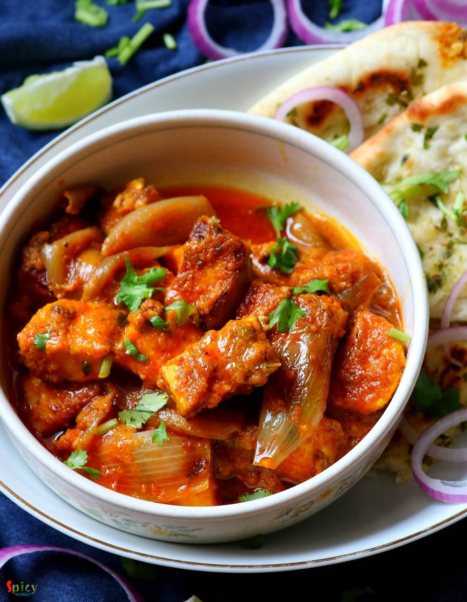

Simple and Easy Recipes
Paneer Dopyaza
© 2016 Spicy World, Published on: Aug 15, 2019
Dopyaza means double the amount of onion. Paneer Dopyaza is a North Indian Paneer gravy preparation which has a thick, creamy sauce along with soft Paneer cubes and slight crunch of onion. In this recipe onions will be added twice in two different forms. It goes best with naan, roti or jeera rice. Do give it a try and let me know how it turned out for you.

Ingredients
- 500 grams of Paneer cubes.
- 1 big onion, roughly chopped and medium chunks of half of a onion.
- 1 tomato, roughly chopped.
- 6-8 cashews or almonds (soaked in water).
- 2 Tablespoons of ginger garlic paste.
- Spice powder 1 Teaspoon each of (turmeric powder, red chili powder, roasted cumin and coriander powder, kashmiri chili powder).
- Salt and Sugar as per your taste.
- Half cup of hot water.
- Some dry fenugreek leaves.
- 1 Teaspoon of garam masala powder.
- 1/3rd cup of cooking oil.


Steps
Add some salt, half Teaspoon of turmeric powder, half Teaspoon of red chili powder, half Teaspoon of garam masala powder and 1 Teaspoon of oil to the paneer cubes, mix well and keep aside for 15 minutes.
Make a smooth paste out of roughly chopped onion, tomato and nuts with little water.
Heat the remaining oil in a pan, add the chunks of onion, fry for 1 minute on high flame then take them out of the pan.
Then add marinated paneer pieces, fry for 3-4 minutes on medium flame then take them out of the pan.
In the remaining oil add ginger garlic paste, cook for 2 minutes.
Add the onion tomato and nut paste, cook for 15 minutes on medium flame.
Add all of the spice powder, mix well and cook for 5 minutes.
Next add hot water, some salt and sugar. Mix well and bring it to a boil.
Add the paneer pieces and cook for 10 minutes on medium flame.
Lastly add fried onion chunks, dry fenugreek leaves and garam masala powder. Mix well and turn off the heat.
Your Paneer Dopyaza is ready to serve.
Serve this hot with chapati or naan ..
")